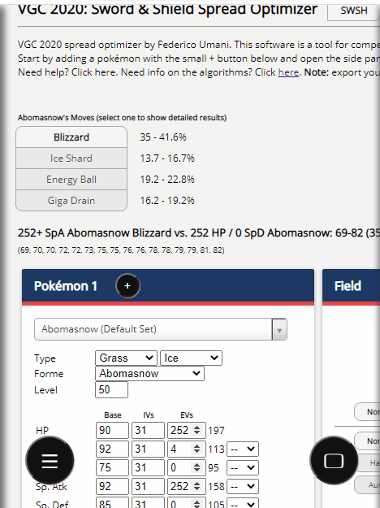
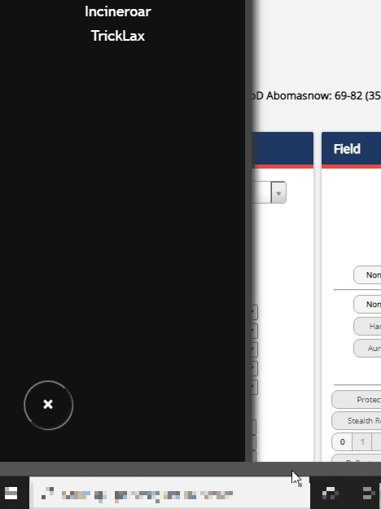
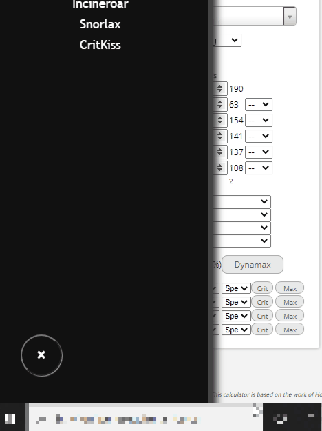
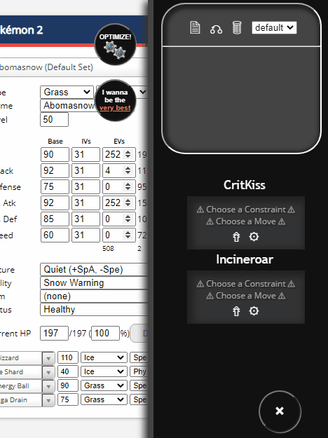
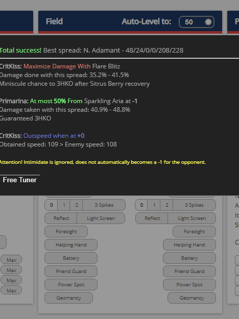
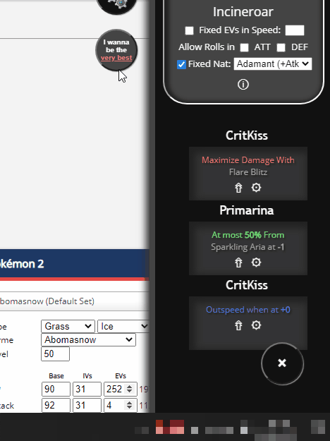
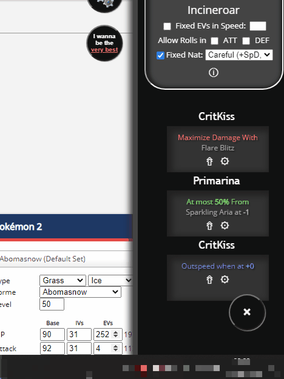
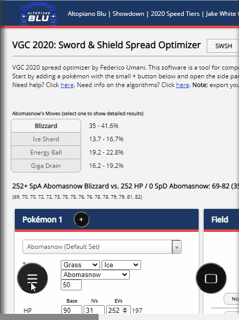

To store a pokemon in the repository to retrieve it easily later, first build one like you would do in a normal calculator then click on the black '+' icon above him. Choose a Nickname for your pokemon and click 'OK'. When you open the left panel by clicking on the big black button in the bottom-left part of the page, you'll see your pokemon on the repository list. You can view some of its characteristics by simply clicking on it's name. In this example you can see how to add a simple default Incineror to the list. It's advisable to choose a nickname that reminds you its role in battle, like "AV-Inci" or "TR-Inci". Note: If you erase the browser's cache, you will lose all your pokemons! Export them first!

Pokemon in the repository can be loaded back to the calculator by clicking in one of the two small pencil icons at the bottom of the pokemon's details. One of them loads the pokemon in the left panel and one in the right panel, allowing you to easily calculate a confrontation between two saved pokemon of any choice. The bin icon is used to delete a saved pokemon, so be careful when you click on it (the program asks you for a confirmation, anyway). Once you have loaded a pokemon in the left panel, you can edit some of its moves or stats and then save it back with another name, so that you can create many variants of the same species.

If you hover on a Pokemon's name, a small button with an arrow will appear next to it. This button allows you to add the pokemon as a constraint. You can find your active constraints on the right panel: click on the big button on the bottom-right of the screen to open it. You can show or hide each constraint detail by clicking on the Pokemon's name, but all the parameters are initially unset. To remove a constraint, simply click on the "X" button that appears when you hover a constraint Pokemon.

Before doing anything, you must choose a Subject Pokemon. The Subject Pokemon is the Pokemon that you want to optimize, i.e. the one that you are searching a spread for. You must chose a Subject Pokemon among those that you have added to the right panel. By clicking on the small double arrow at the bottom of its description, the Pokemon will disappear from the constraint list and will be moved on the optimization screen, that you can find on the top half of the right panel. The monitor shows you the pokemon's nickname other options that you will use later to calculate its spread automagically. Under these options, you can find two small buttons that open this page and the algorithm-info page. For now can ignore all the other buttons.
Click on the small gear icon on the constraint description to choose the constraint type. If your Subject Pokemon is Incineroar and you chose 'Maximize' on Togekiss, you are saying that you want maximize the damage inflicted by Incineroar on Togekiss. Conversely, if you choose 'Minimize', you tell the software to minimize the damage inflicted by Togekiss on Incineroar. You can also specify further details such as which move the attacker use. Instead of maximizing/minimizing damage, you can explicitly define a threshold for the damage inflicted. You can also impose a constraint on speed by selecting Outspeed and, if it's possible, the software will make Inci outspeed Toge.
Once your constraints are all set, you can start to optimize. In the monitor, below your Subject Pokemon's name, there are a few optimization option. By default, for example, the subject's nature is fixed, but if you uncheck the "fixed nature" option then the software will choose the best nature among the few competitive natures out there (beware it never chooses speed-decreasing natures unless the pokemon has 0 IV in speed). You can also relax all your threshold constraints by telling the software that you accept rolls in defense, offense or both. In that case the software will take as viable all the solution that have at least 1% probability to fulfill your requests. Finally, if you need a very specific speed EVs quantity, you can tell so.

If you are not 100% satisfied with the spread chosen by the software, you can optimize it by your self with the free tuner interface. By clicking on the "Free Tuner" button you can toggle a control panel that contains some spinners to edit the spread as you wish and all the changes will be reflected on the damage summary above. You can watch the effects of your modifications on the constraints in real time. Right to the buttons there is a number that sums up all the EVs used: if it becomes red, it means that you have exceeded the 510 limit. At any time you can click "Restore" to retrieve the optimized spread chosen by the software. When you are done, you can click on "Copy" to copy it in a showdown-compatible format.

By clicking on this button you basically choose a different optimization algorithm, much slower and slightly better than the other. When you click, the software will warn you about this; will also warn you if you leave "Fixed Nature" unchecked, because the time needed for completion increase by four times. Click "OK" and the loading will begin. In the example on the left the loading completes quickly because of 228 Speed EVs (which are a forced choice, thus reducing the possibilities), but in principle the loading time can be from 10 minutes with fixed nature or 40 minutes with optimized nature. After that the report screen is the same: you can even tune the very best spread if you don't trust the software :/

At the top of the monitor you can find some buttons and a drop down menu to manage your presets. A preset contains a Subject Pokemon and one or more constraints and you can quickly jump from one to the other with the dropdown menu. If you don't like any edit you have done to your preset you can press "Restore" to the undo the changes. Beware that when you select another preset or reload the page the preset on which you were working get saved automatically, so you'll lose the opportunity to undo the changes. Push on the page icon and insert a name to create a new empty preset; push on the bin icon to delete the selected preset and return to the 'default' one. The default preset cannot be deleted.

It's important to export your data every now and then. Open the left side panel and click on the floppy-disc icon. Insert a name and wait a few seconds for the browser to start downloading a file containing all your data. This includes your pokemon list and all the presets with their constraints. In the animation example it's shown how, after that, you can safely clear all the browser's cache: it's sufficient to click on the folder icon and choose the file that you previously exported to import back your list and all your presets. You can keep different files with different type of data, such as different metagames, and quickly import them when you need.
 Click on the small gear icon on the constraint description to choose the constraint type. If your Subject Pokemon is Incineroar and you chose 'Maximize' on Togekiss, you are saying that you want maximize the damage inflicted by Incineroar on Togekiss. Conversely, if you choose 'Minimize', you tell the software to minimize the damage inflicted by Togekiss on Incineroar. You can also specify further details such as which move the attacker use. Instead of maximizing/minimizing damage, you can explicitly define a threshold for the damage inflicted. You can also impose a constraint on speed by selecting Outspeed and, if it's possible, the software will make Inci outspeed Toge.
Click on the small gear icon on the constraint description to choose the constraint type. If your Subject Pokemon is Incineroar and you chose 'Maximize' on Togekiss, you are saying that you want maximize the damage inflicted by Incineroar on Togekiss. Conversely, if you choose 'Minimize', you tell the software to minimize the damage inflicted by Togekiss on Incineroar. You can also specify further details such as which move the attacker use. Instead of maximizing/minimizing damage, you can explicitly define a threshold for the damage inflicted. You can also impose a constraint on speed by selecting Outspeed and, if it's possible, the software will make Inci outspeed Toge.
 Once your constraints are all set, you can start to optimize. In the monitor, below your Subject Pokemon's name, there are a few optimization option. By default, for example, the subject's nature is fixed, but if you uncheck the "fixed nature" option then the software will choose the best nature among the few competitive natures out there (beware it never chooses speed-decreasing natures unless the pokemon has 0 IV in speed). You can also relax all your threshold constraints by telling the software that you accept rolls in defense, offense or both. In that case the software will take as viable all the solution that have at least 1% probability to fulfill your requests. Finally, if you need a very specific speed EVs quantity, you can tell so.
Once your constraints are all set, you can start to optimize. In the monitor, below your Subject Pokemon's name, there are a few optimization option. By default, for example, the subject's nature is fixed, but if you uncheck the "fixed nature" option then the software will choose the best nature among the few competitive natures out there (beware it never chooses speed-decreasing natures unless the pokemon has 0 IV in speed). You can also relax all your threshold constraints by telling the software that you accept rolls in defense, offense or both. In that case the software will take as viable all the solution that have at least 1% probability to fulfill your requests. Finally, if you need a very specific speed EVs quantity, you can tell so.